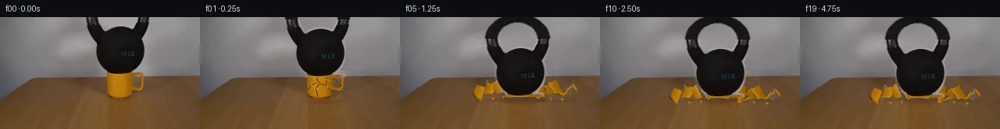

![首帧]()

Round 00
2026-11-05T14:31:47.943243+00:00像素候选变化代码 +286/−0inspection 更新
pixels c89323385a3ab39f · code b536363a5eba663a
查看本轮 generate.py 真实 diff
--- previous/generate.py +++ current/generate.py @@ -0,0 +1,286 @@ +#!/usr/bin/env python3 +"""Generate the 20-frame PixelWorld continuation using local pixel operations only.""" + +from pathlib import Path +import numpy as np +from PIL import Image, ImageDraw, ImageFilter, ImageFont + +from artifact_io import save + + +ROOT = Path(__file__).resolve().parent +W, H = 256, 144 + + +def reconstruct_rect(dst, src, x0, x1, y0, y1, texture_strength=0.22): + """Replace an occluded rectangle by row-wise interpolation plus donor texture.""" + out = dst.copy().astype(np.float32) + s = src.astype(np.float32) + for y in range(y0, y1): + left = np.median(s[y, max(0, x0 - 7):x0], axis=0) + right = np.median(s[y, x1:min(W, x1 + 7)], axis=0) + n = x1 - x0 + for j, x in enumerate(range(x0, x1)): + u = (j + 1) / (n + 1) + base = left * (1.0 - u) + right * u + # Borrow only the high-frequency residue from a clear patch on the left. + donor_x = max(3, x0 - 38 + (j % 31)) + lo = max(0, donor_x - 2) + hi = min(W, donor_x + 3) + local = np.mean(s[y, lo:hi], axis=0) + texture = s[y, donor_x] - local + out[y, x] = base + texture_strength * texture + return np.clip(out, 0, 255).astype(np.uint8) + + +def make_background(src): + bg = src.copy() + # The broad pass removes the bell from the gray wall and follows the slanted + # wall/table transition using unoccluded samples on both sides. + bg = reconstruct_rect(bg, src, 104, 199, 0, 79, 0.16) + # The tighter pass removes mug and contact area while retaining wood grain. + bg = reconstruct_rect(bg, src, 128, 192, 69, 109, 0.32) + return bg + + +def mask_from_core(core, diff, grow=3, blur=0.55): + core_img = Image.fromarray((core.astype(np.uint8) * 255), 'L') + size = grow if grow % 2 else grow + 1 + grown = np.array(core_img.filter(ImageFilter.MaxFilter(size)), dtype=np.uint8) > 0 + a = np.zeros(core.shape, dtype=np.float32) + a[core] = 255 + edge = grown & ~core + a[edge] = np.clip(diff[edge] * 12.0, 0, 235) + im = Image.fromarray(a.astype(np.uint8), 'L') + if blur: + im = im.filter(ImageFilter.GaussianBlur(blur)) + return np.array(im, dtype=np.uint8) + + +def make_layers(src, bg): + a = src.astype(np.int16) + b = bg.astype(np.int16) + diff = np.max(np.abs(a - b), axis=2) + lum = np.mean(a, axis=2) + yy, xx = np.mgrid[:H, :W] + + kb_roi = (xx >= 104) & (xx <= 196) & (yy <= 74) + kb_core = kb_roi & (lum < 103) & (diff > 7) + kb_alpha = mask_from_core(kb_core, diff, grow=5, blur=0.55) + kb_alpha[~kb_roi] = 0 + + r, g, bl = a[:, :, 0], a[:, :, 1], a[:, :, 2] + mug_roi = (xx >= 132) & (xx <= 188) & (yy >= 69) & (yy <= 106) + yellow = (r - g > 26) & (g - bl > 18) & (r > 112) + mug_core = mug_roi & yellow & (diff > 5) + mug_alpha = mask_from_core(mug_core, diff, grow=5, blur=0.45) + mug_alpha[~mug_roi] = 0 + # Exclude the genuinely black bell base where it overlaps the yellow rim. + mug_alpha[kb_core] = 0 + + mug = np.dstack([src, mug_alpha]) + + # Extended bell source coordinates cover y=-32..74. The negative rows are + # the previously out-of-frame top of the arched iron handle. + yoff, ext_h = 32, 107 + kb_ext = np.zeros((ext_h, W, 4), dtype=np.uint8) + kb_ext[yoff:yoff + 75, :, :3] = src[:75] … diff truncated; 199 more lines …